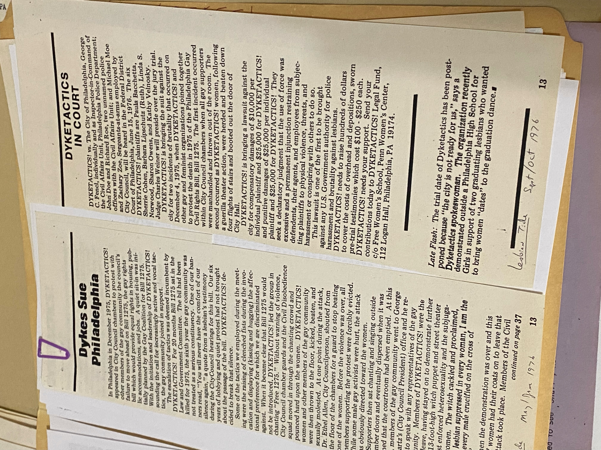
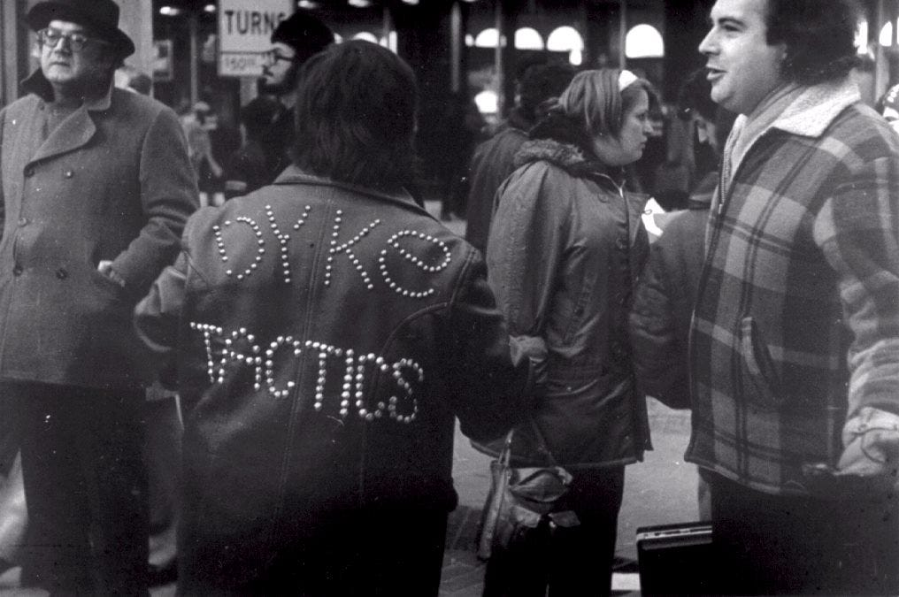

I went to the Lesbian Herstory Archives and did research! Truly a dream come true for me, getting paid to research Philadelphia lesbian history is all I have ever wanted. The documentary really wants good images or anything that would look night in a film.
Here's a basic rundown of how the LHA is set up:
| 1st Floor | |
Room with the couch
|
Room with long wooden table
|
| 2nd Floor | |
Room to the left of the Gertrude Stein cutout
|
Room to the right of the Gertrude Stein cutout
|
I looked in the organization collections and found two folders on Dyketactics!. In here, I found the press releases and various legal documents, some flyers for fundraisers, and even their checks that said “Dyketactics!” on them.
I looked under the individual people’s files, and didn’t find as much as I wanted. There were no folders for:
There were folders on, but none of the information was about Dyketactics!:
I looked under the geographical collections and found Philadelphia, Pennsylvania (also 2 folders). Here, there are similar press releases about Dyketactics! and even some ‘70s advertisements about Giovanni’s Room, which was very sweet. The Philly-lesbian newsletter Hera wasn’t in the periodicals room, but it was in the Philly folder. There was even a photo in the newsletter of Dyketactics! in the courtroom.
The real exciting find, which I had vaguely remembered seeing when I visited the LHA a year ago, is Kathy Hogan’s leather jacket that says “Dyketactics!” on the back. I’ll have a chance to go back to the archives with someone who has a camera to get better documentation of that one.
